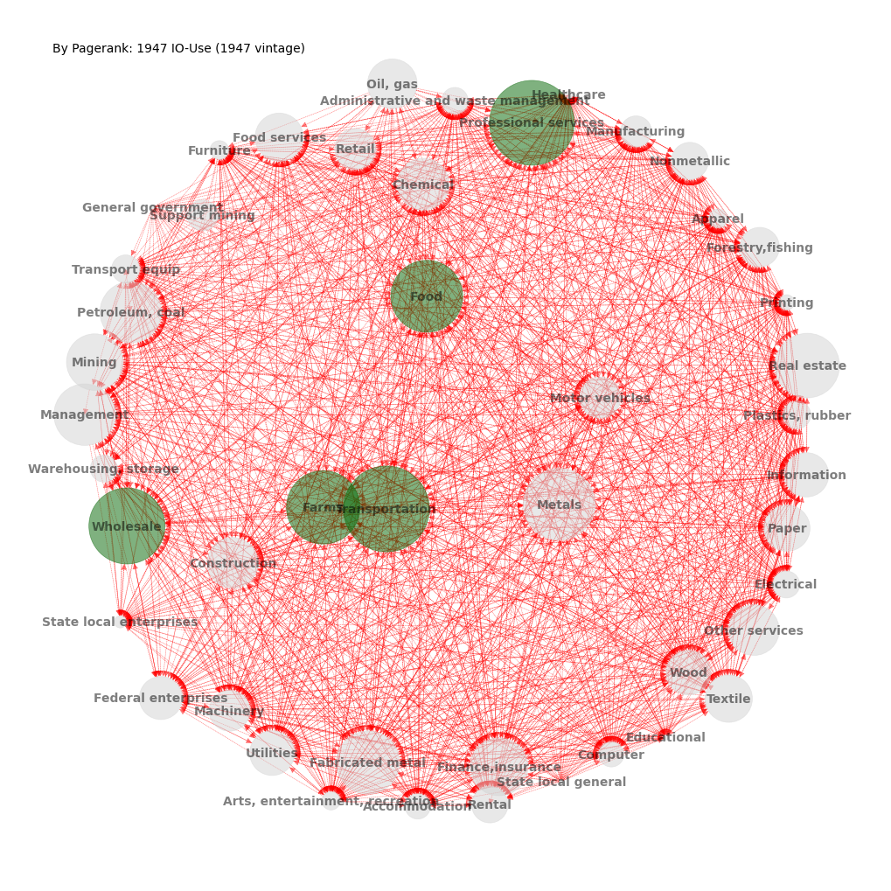
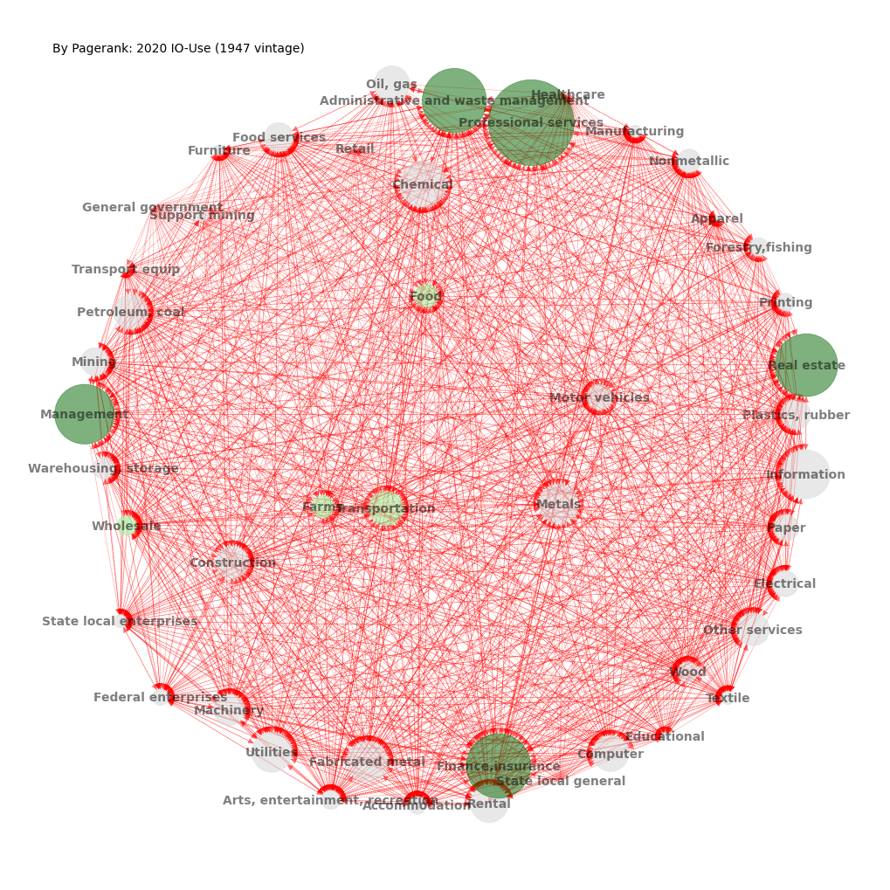

Graph Centrality#
UNDER CONSTRUCTION
Centrality: eigenvector, hub, authority, pagerank,
BEA: Input-Output Use Table, e.g. Choi and Foerster (2017)
import time
import numpy as np
import pandas as pd
from pandas import DataFrame, Series
import matplotlib.pyplot as plt
import networkx as nx
from finds.database import RedisDB
from finds.readers import Sectoring, BEA
from finds.graph import graph_info, nodes_centrality, graph_draw
from finds.misc import Show
from secret import credentials, paths
# %matplotlib qt
VERBOSE = 0
show = Show(ndigits=4, latex=None)
LAST_YEAR = 2021
years = np.arange(1947, LAST_YEAR)
vintages = [1997, 1963, 1947] # when sectoring schemes were revised
rdb = RedisDB(**credentials['redis'])
bea = BEA(rdb, **credentials['bea'], verbose=VERBOSE)
imgdir = paths['images'] / 'bea'
Read IOUse tables from BEA website
ioUses = dict()
for vintage in vintages:
for year in [y for y in years if y >= vintage]:
df = bea.read_ioUse(year, vintage=vintage)
ioUses[(vintage, year)] = df
print(f"{len(ioUses)} tables through sectoring vintage year {vintage}")
24 tables through sectoring vintage year 1997
82 tables through sectoring vintage year 1963
156 tables through sectoring vintage year 1947
## Set directed edges with tail on user (table column) --> head on maker (row)
## Direction of edges point from user industry to maker, i.e. follows the money
tail = 'colcode' # edges follow flow of payments, from column to row
head = 'rowcode'
drop = ('F','T','U','V','Other') # drop these codes
colors = ['lightgrey', 'darkgreen', 'lightgreen']
yearc = {} # collect annual table
Populate and plot graph of first and last table years
ifig, year = 0, 1947
vintage = 1947
year0 = 1947
#vintage = 1997
#year0 = 2019
year1 = 2020
for ifig, year in enumerate([year0, year1]):
# keep year, drop invalid rows
ioUse = ioUses[(vintage, year)]
data = ioUse[(~ioUse['rowcode'].str.startswith(drop) &
~ioUse['colcode'].str.startswith(drop))].copy()
# create master table of industries and measurements
master = data[data['rowcode']==data['colcode']][['rowcode','datavalue']]\
.set_index('rowcode')\
.rename(columns={'datavalue': 'self'})
# extract cross data; generate and load edges (as tuples) to graph
data = data[(data['colcode'] != data['rowcode'])]
data['weights'] = data['datavalue'] / data['datavalue'].sum()
edges = data.loc[data['weights'] > 0,
[tail, head, 'weights']].values.tolist()
G = nx.DiGraph()
G.add_weighted_edges_from(edges, weight='weight')
nx_labels = BEA.bea_industry_[list(G.nodes)].to_dict()
# update master table industry flow values
master = master.join(data.groupby(['colcode'])['datavalue'].sum(),
how='outer').rename(columns={'datavalue': 'user'})
master = master.join(data.groupby(['rowcode'])['datavalue'].sum(),
how='outer').rename(columns={'datavalue': 'maker'})
master = master.fillna(0).astype(int)
# inweight~supply~authority~eigenvector~pagerank, outweight~demand~hub
centrality = DataFrame(nodes_centrality(G))
master = master.join(centrality, how='left')
master['bea'] = BEA.bea_industry_[master.index].to_list()
yearc[year] = master[['pagerank', 'bea']].set_index('bea')
# visualize graph
score = centrality['pagerank']
node_size = score.to_dict()
node_color = {node: colors[0] for node in G.nodes()}
if ifig == 0:
center_name = score.index[score.argmax()]
else:
node_color.update({k: colors[2] for k in top_color})
top_color = list(score.index[score.argsort()[-5:]])
node_color.update(dict.fromkeys(top_color, colors[1]))
pos = graph_draw(G,
num=ifig+1,
figsize=(10, 10),
center_name=center_name,
node_color=node_color,
node_size=node_size,
edge_color='r',
k=3,
pos=(pos if ifig else None),
font_size=10,
font_weight='semibold',
labels=master['bea'].to_dict(),
title=f"By Pagerank: {year} IO-Use ({vintage} vintage)")
if imgdir:
plt.savefig(imgdir / f"{year}.jpg")


## Display node centrality
c = pd.concat([yearc[year0].rank(ascending=False).astype(int),
yearc[year1].rank(ascending=False).astype(int)],
axis=1)
c.columns = pd.MultiIndex.from_product([[year0, year1], yearc[year0].columns])
c
| 1947 | 2020 | |
|---|---|---|
| pagerank | pagerank | |
| bea | ||
| Farms | 4 | 27 |
| Forestry,fishing | 27 | 32 |
| Oil, gas | 16 | 13 |
| Mining | 12 | 21 |
| Support mining | 31 | 38 |
| Utilities | 20 | 9 |
| Construction | 14 | 17 |
| Food | 5 | 25 |
| Textile | 18 | 36 |
| Apparel | 39 | 43 |
| Wood | 21 | 29 |
| Paper | 19 | 23 |
| Printing | 42 | 33 |
| Petroleum, coal | 10 | 14 |
| Chemical | 13 | 7 |
| Plastics, rubber | 33 | 19 |
| Nonmetallic | 28 | 26 |
| Metals | 6 | 10 |
| Fabricated metal | 8 | 8 |
| Machinery | 26 | 18 |
| Computer | 38 | 12 |
| Electrical | 35 | 22 |
| Motor vehicles | 24 | 24 |
| Transport equip | 32 | 42 |
| Furniture | 40 | 40 |
| Manufacturing | 30 | 39 |
| Wholesale | 3 | 30 |
| Retail | 25 | 45 |
| Transportation | 1 | 15 |
| Warehousing, storage | 34 | 28 |
| Information | 22 | 6 |
| Finance,insurance | 11 | 2 |
| Real estate | 7 | 4 |
| Rental | 29 | 11 |
| Professional services | 2 | 1 |
| Management | 9 | 5 |
| Administrative and waste management | 36 | 3 |
| Educational | 45 | 41 |
| Healthcare | 44 | 44 |
| Arts, entertainment, recreation | 41 | 31 |
| Accommodation | 37 | 34 |
| Food services | 17 | 20 |
| Other services | 15 | 16 |
| Federal enterprises | 23 | 35 |
| General government | 46 | 46 |
| State local enterprises | 43 | 37 |
| State local general | 46 | 46 |
## Display correlation of centrality ranks
c.corr().round(3)
| 1947 | 2020 | ||
|---|---|---|---|
| pagerank | pagerank | ||
| 1947 | pagerank | 1.00 | 0.62 |
| 2020 | pagerank | 0.62 | 1.00 |
# Display latest graph and node centrality
year = LAST_YEAR - 1
ioUse = ioUses[(1997, year)]
data = ioUse[(~ioUse['rowcode'].str.startswith(drop) &
~ioUse['colcode'].str.startswith(drop))].copy()
## extract cross data; generate and load edges (as tuples) to graph
data = data[(data['colcode'] != data['rowcode'])]
data['weights'] = data['datavalue'] / data['datavalue'].sum()
edges = data.loc[data['weights'] > 0, [tail, head, 'weights']].values.tolist()
G = nx.DiGraph()
G.add_weighted_edges_from(edges, weight='weight')
## update master table industry flow values and graph centrality measures
master = pd.concat((data[data['rowcode']
== data['colcode']][['rowcode','datavalue']]\
.set_index('rowcode')\
.rename(columns={'datavalue': 'self'}),
data.groupby(['colcode'])['datavalue'].sum()\
.rename('user'),
data.groupby(['rowcode'])['datavalue'].sum()\
.rename('maker')),
join='outer',
axis=1).fillna(0).astype(int)
master = master.join(DataFrame(nodes_centrality(G)), how='left')
master['bea'] = BEA.bea_industry_[master.index].to_list()
show(master.drop(columns=['self', 'clustering']),
ndigits=3,
caption=f"Centrality of BEA Input-Output Use Table {year}")
| user | maker | in_degree | out_degree | eigenvector | pagerank | hub | authority | betweenness | closeness | bea | |
|---|---|---|---|---|---|---|---|---|---|---|---|
| Centrality of BEA Input-Output Use Table 2020 | |||||||||||
| 111CA | 194547 | 286362 | 0.4203 | 0.6232 | 0.0500 | 0.0088 | 0.0103 | 0.0133 | 0.0008 | 0.6330 | Farms |
| 113FF | 5057 | 70809 | 0.3913 | 0.5362 | 0.0124 | 0.0061 | 0.0003 | 0.0020 | 0.0006 | 0.6216 | Forestry,fishing |
| 211 | 114812 | 262906 | 0.4203 | 0.5942 | 0.0809 | 0.0229 | 0.0064 | 0.0046 | 0.0161 | 0.6330 | Oil, gas |
| 212 | 34128 | 88125 | 0.7246 | 0.6522 | 0.0352 | 0.0139 | 0.0020 | 0.0050 | 0.0052 | 0.7841 | Mining |
| 213 | 27222 | 11272 | 0.0580 | 0.5942 | 0.0029 | 0.0027 | 0.0019 | 0.0002 | 0.0000 | 0.5149 | Support mining |
| ... | ... | ... | ... | ... | ... | ... | ... | ... | ... | ... | ... |
| GFE | 20912 | 61973 | 0.7826 | 0.6812 | 0.0155 | 0.0039 | 0.0015 | 0.0047 | 0.0065 | 0.8214 | Federal enterprises |
| GFGD | 276183 | 0 | 0.0000 | 0.6957 | 0.0000 | 0.0001 | 0.0181 | -0.0000 | 0.0000 | 0.0000 | Defense |
| GFGN | 164988 | 0 | 0.0000 | 0.7826 | 0.0000 | 0.0001 | 0.0125 | 0.0000 | 0.0000 | 0.0000 | Nondefense |
| GSLE | 186131 | 33750 | 0.8841 | 0.6812 | 0.0123 | 0.0031 | 0.0139 | 0.0023 | 0.0031 | 0.8961 | State local enterprises |
| GSLG | 809034 | 0 | 0.0000 | 0.8116 | 0.0000 | 0.0001 | 0.0509 | 0.0000 | 0.0000 | 0.0000 | State local general |
70 rows × 11 columns
Series(graph_info(G, fast=True))
weakly_connected True
weakly_connected_components 1
size_largest_weak_component 70
strongly_connected False
strongly_connected_components 10
size_largest_strong_component 61
directed True
weighted True
negatively_weighted False
edges 3235
nodes 70
selfloops 0
density 0.669772
dtype: object